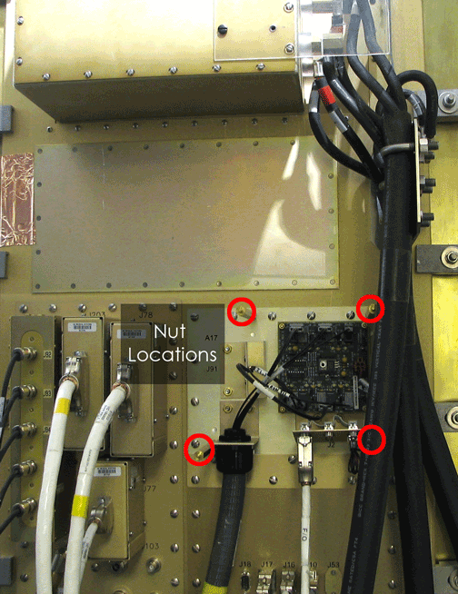

Proprietary to General Electric Company
Direction 5440000, Rev# 5
Signa HDxt Service Methods
Module Version 1.0, Version Date 4/26/07
Proprietary to General Electric Company |
| Required Persons | Preliminary Reqs | Procedure | Finalization |
|---|---|---|---|
| 1 | Not Applicable | 10 mins | Not Applicable |
These tests are provided to verify lines between the System Cabinet and the Fiber Optic Repeater Board (except SRI Reset). When the tests run, the STIF sends a data pattern out to the Fiber Optic Repeater Board and verifies that the exact same data is looped back to the STIF. Any mismatches indicate that either the loopback jumper is not set or there is a fault in the lines between the STIF and the Fiber Optic Repeater Board.
| ||||
| ELECTROCUTION HAZARD. | ||||
| HIGH VOLTAGE PRESENT. | ||||
| USE PROPER LOCKOUT / TAGOUT PROCEDURES BEFORE REPLACING THE COMPONENTS. |
| Condition | Reference | Effectivity |
|---|---|---|
Proper Lock Out / Tag Out as stated in Step 1 must be performed. | - | - |
Follow the procedures in LOTO for Pen Panel, Patient Blower, and Magnet Room to lock out and tag out the penetration panel.
You will need to access the jumper on the Fiber Optic Repeater board. This board is on the pen panel and has a clear plastic cover mounted in front of it. Remove the four (4) bolts that attach the cover.
Illustration 1: Fiber Optic Repeater Board Nut Locations

Set loopback jumper in the Fiber Optic Repeater Board (PP1A17A1) located on the equipment room side of Pen Panel, to Position "B" (Loopback). See Illustration 2.
Illustration 2: Fiber Optic Repeater Board Loopback Jumper

| NOTE: | To put the jumper in the B position, place the black jumper on the top two prongs. To put the jumper in the A position, place the black jumper on the bottom two prongs. |
To start the Repeater diagnostics, on the Service Browser's Diagnostics tab, click Fiber Repeater Diagnostics. Select and run both tests. See Illustration 3.
Illustration 3: Fiber Optic Repeater Diagnostics Screen

An error is logged if any of the following conditions occur:
A fiber optic line between the STIF board and the Fiber Optic Repeater is defective (this test does not include the SRI Reset fiber optic).
The system does not have a Fiber Optic Repeater.
The loopback jumper at the Fiber Optic Repeater is NOT in position "B" (see Illustration 2).
The Fiber Optic Repeater board is defective.
Return loopback jumper in the Fiber Optic Repeater Board back to position “A” (see Illustration 2).
Replace the clear cover removed in Step 2.
If the Fiber Optic Repeater Board needs to be replaced, see Fiber Optic Repeater Board Replacement.
Do a test scan before customer turn over.